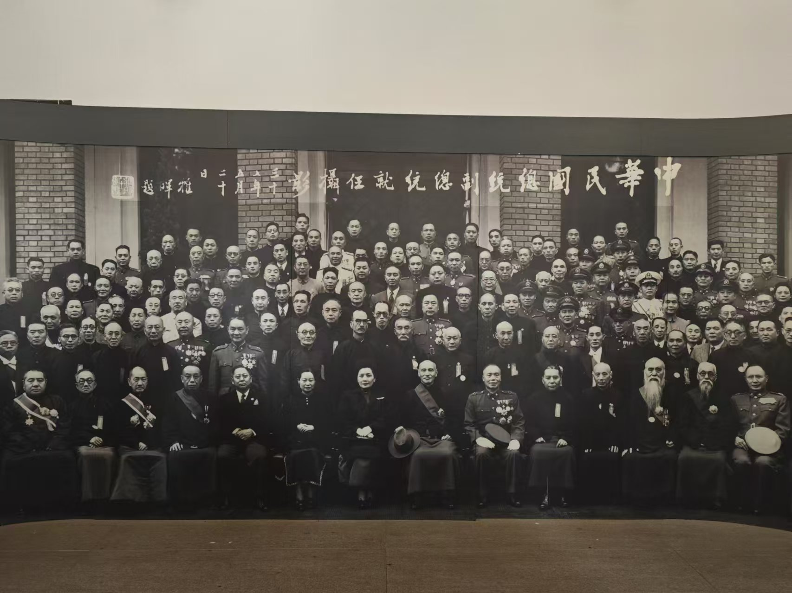

旅行日志日期：2024年03月30日 📅 天气：晴/ 🌈/早上从合肥南站出发，坐高铁来到了南京南站。然后，去新街口买些早饭。买了推荐很多的鸡蛋汉堡和一杯蜜雪冰城。 随后，我们商量着先去了非常有名的总统府。 |

|
第一站--总统府南京总统府位于南京市玄武区长江路292号，是中国近代建筑遗存中规模最大、保存最完整的建筑群，也是南京民国建筑的主要代表之一，中国近代历史的重要遗址。南京总统府自近代以来，多次成为中国政治军事的中枢、重大事件的策源地，中国一系列重大事件或在这里发生，与这里密切相关，许多重要人物都在此活动过。 南京总统府至今已有600多年的历史，可追溯到明初的归德侯府和汉王府；清代被辟为江宁织造署、两江总督署等，康熙、乾隆南巡均以此为行宫；太平天国定都天京后，在此兴建规模宏大的天王府；1912年1月1日，孙中山在此宣誓就职中华民国临时大总统，辟为大总统府，后为南京国民政府总统府。 南京总统府建筑群占地面积约9万平方米，既有中国古代传统的江南园林，也有近代西风东渐的建筑遗存，分三个区域：中区主要有国民政府、总统府及所属机构；西区有孙中山临时大总统办公室、秘书处、西花园、孙中山起居室及参谋本部等；东区主要有行政院、陶林二公祠、马厩和东花园等。其中分布着总统府文物史料、孙中山与南京临时政府、太平天国、清两江总督署等十多个文物史料和复原陈列。 2004年，被列为国家AAAA级旅游景区1982年2月，总统府内“太平天国天王府遗址”被国务院公布为全国重点文物保护单位;1998年，辟为中国近代史博物馆;2001年，总统府内“孙中山临时大总统府及南京国民政府建筑遗存”被国务院公布为全国重点文物保护单位;2004年，被列为国家AAAA级旅游景区;2016年9月，入选"首批中国20世纪建筑遗产"名录。 |
第二站--城墙 |
||